Mississippi Coastal Assessment Exploration, by Parameter
About the data
Data for all years of Mississippi Department of Environmental Quality’s annual Mississippi Coastal Assessment (MCA) were downloaded from the Water Quality Portal on 3/11/2026. Detail on the query and data processing steps are below.
The query url that yielded the file is:
https://www.waterqualitydata.us/#statecode=US%3A28&organization=21MSWQ_WQX&sampleMedia=Water&project=MCA10&project=MCA11&project=MCA12&project=MCA13&project=MCA14&project=MCA15&project=MCA16&project=MCA17&project=MCA18&project=MCA19&project=MCA20&project=MCA21&project=MCA22&project=MCA23&project=MCA24&startDateLo=01-01-2000&startDateHi=12-31-2025&mimeType=csv&dataProfile=resultPhysChem&providers=NWIS&providers=STORET"Steps followed after download
- Parameter names in the
CharacteristicNamewere combined with associated details from theResultSampleFractionTextcolumn, into a singleParametercolumn, to differentiate total and dissolved forms of nutrients. - Verified that parameter names were consistent; one parameter is represented by one name throughout.
- Many rows had a
CharacteristicNameof “Inorganic nitrogen (nitrate and nitrite) *retired*use Nitrate + Nitrite, Total”. These were converted to “Nitrate + Nitrite, Total”.
- Many rows had a
- Verified that parameter names had consistent units of reporting.
- Secchi disk depth was reported in “ft” for 32 sampling events, and in “m” for the remaining 441. This appeared to be limited to 2014 sampling. These values were converted to m to be consistent with other values.
- Many rows did not have reported units. A separate data frame was made to track units for each parameter.
- Secchi disk depth was reported in “ft” for 32 sampling events, and in “m” for the remaining 441. This appeared to be limited to 2014 sampling. These values were converted to m to be consistent with other values.
- When results were below detection (denoted in the original
ResultDetectionConditionTextcolumn as “Present Below Quantification Limit”), the MDL provided in theDetectionQuantitationLimitMeasure.MeasureValuecolumn was inserted into theValuefield (which had been NA otherwise). ACensoredcolumn was created, with 1s in the same rows to denote <MDL results, and 0s in rows that were not censored values.
- Long-term stations were identified as those sampled on more than 1 date. This yielded 8 stations, 5 of which were sampled in all 15 years and the others sampled for 10 or 11 years. A
TRUE/FALSEcolumn,LongTermStation, was added to the data frame to denote this.
- GPS Coordinates were corrected for the following:
- In 2020, one data point had an associated longitude of 88.xxxx rather than -88.xxxx. Now all Longitude values are checked and if they are not negative, they are multiplied by -1.
- In 2024, 3 data points had latitudes of 32.xxxx. Details follow. These were all corrected by subtracting 2 in order to adjust to 30.xxxx. This correction is specific to the year 2024.
- 21MSWQ_WQX-MS24-496, INDUSTRIAL SEAWAY. Lat given as 32.42299. Could not find other sites in the dataset with the INDUSTRIAL SEAWAY name but based on the following stations, believe correcting this to 30.xxxx is also appropriate.
- 21MSWQ_WQX-MS24-479, ST LOUIS BAY. Lat given as 32.35370. Other latitudes in the dataset for ST LOUIS BAY ranged from 30.31xxx to 30.37xxx, so correcting to 30.xxxx is appropriate.
- 21MSWQ_WQX-MS24-477, MISSISSIPPI SOUND. Lat given as 32.32958. Other latitudes in the dataset for MISSISSIPPI SOUND ranged from 30.15xxx - 30.42xxx, so correcting to 30.xxxx is appropriate.
- 21MSWQ_WQX-MS24-496, INDUSTRIAL SEAWAY. Lat given as 32.42299. Could not find other sites in the dataset with the INDUSTRIAL SEAWAY name but based on the following stations, believe correcting this to 30.xxxx is also appropriate.
- In 2020, one data point had an associated longitude of 88.xxxx rather than -88.xxxx. Now all Longitude values are checked and if they are not negative, they are multiplied by -1.
- Short names, suggested scales (log(x+1), sqrt, or continuous), and suggested color palettes were added to
ParamComprehensList.csv, a table of parameter names and units that had previously been exported upond data processing. This should make it easier to automate mapping with custom parameter settings in a shiny app.
Ammonia-nitrogen, Dissolved
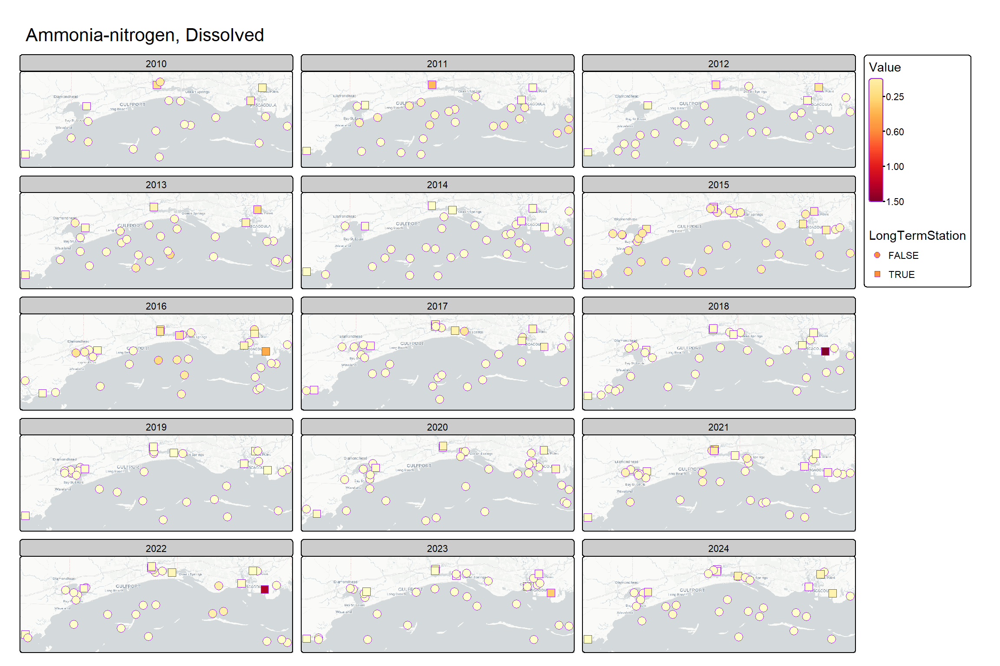
There are two graphs in this tab
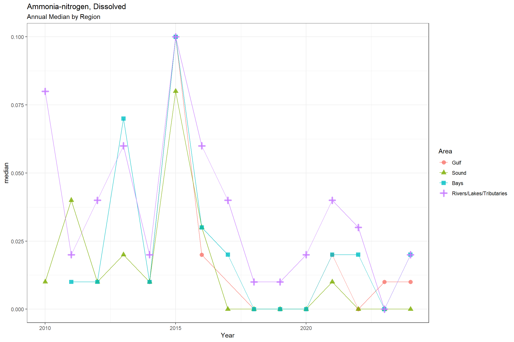
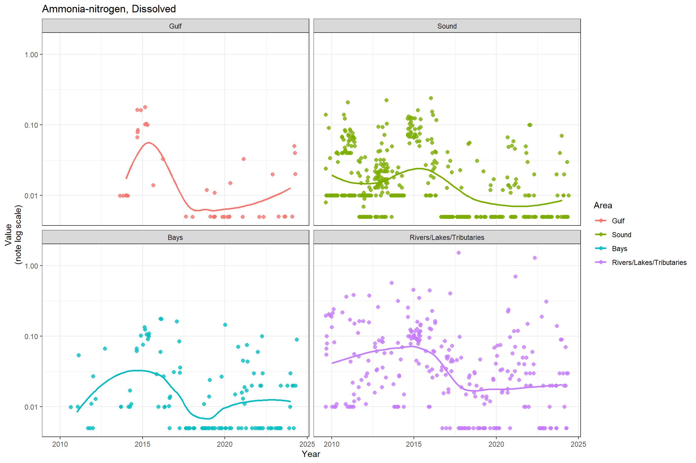
| Year | N | Mean | Median | SD | IQR | Min | Max |
|---|---|---|---|---|---|---|---|
| 2010 | 59 | 0.044 | 0.010 | 0.064 | 0.030 | 0.008 | 0.243 |
| 2011 | 81 | 0.054 | 0.040 | 0.067 | 0.056 | 0.010 | 0.384 |
| 2012 | 84 | 0.023 | 0.010 | 0.050 | 0.012 | 0.005 | 0.377 |
| 2013 | 86 | 0.034 | 0.021 | 0.041 | 0.019 | 0.005 | 0.259 |
| 2014 | 80 | 0.025 | 0.010 | 0.072 | 0.000 | 0.005 | 0.570 |
| 2015 | 88 | 0.108 | 0.098 | 0.057 | 0.042 | 0.041 | 0.455 |
| 2016 | 54 | 0.068 | 0.032 | 0.081 | 0.071 | 0.010 | 0.445 |
| 2017 | 58 | 0.032 | 0.014 | 0.058 | 0.032 | 0.005 | 0.404 |
| 2018 | 57 | 0.038 | 0.005 | 0.200 | 0.000 | 0.005 | 1.520 |
| 2019 | 53 | 0.010 | 0.005 | 0.009 | 0.008 | 0.005 | 0.047 |
| 2020 | 58 | 0.016 | 0.005 | 0.024 | 0.010 | 0.005 | 0.145 |
| 2021 | 54 | 0.049 | 0.018 | 0.102 | 0.037 | 0.005 | 0.699 |
| 2022 | 55 | 0.049 | 0.010 | 0.173 | 0.030 | 0.005 | 1.290 |
| 2023 | 52 | 0.016 | 0.005 | 0.049 | 0.000 | 0.005 | 0.310 |
| 2024 | 56 | 0.023 | 0.010 | 0.028 | 0.025 | 0.005 | 0.140 |
There are two graphs in this tab
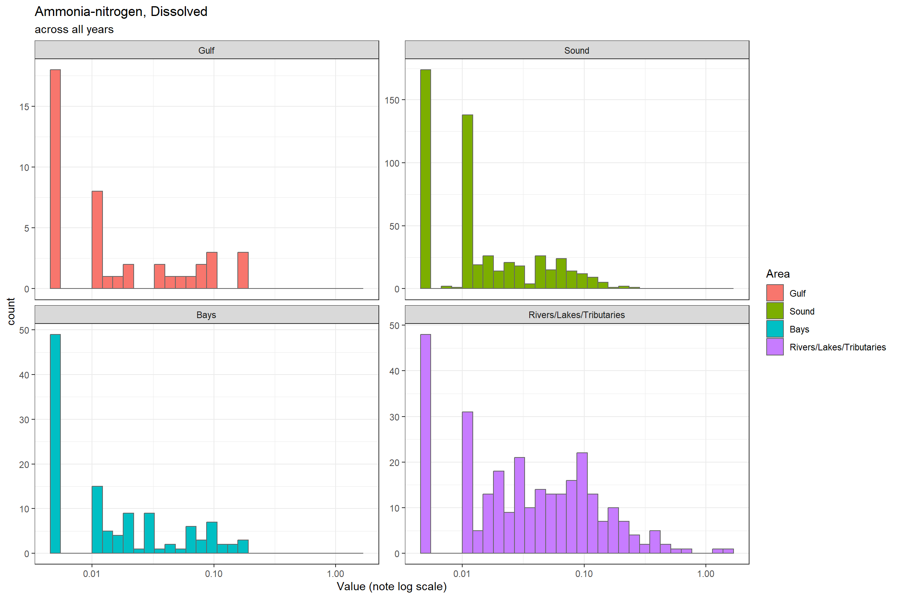
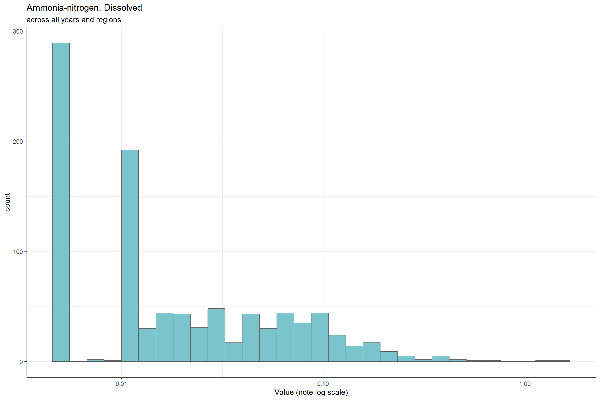
Ammonia-nitrogen, Total
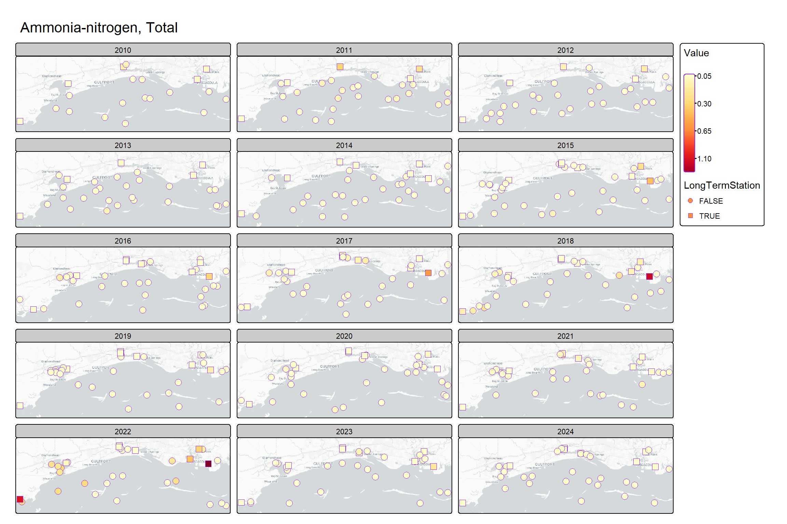
There are two graphs in this tab
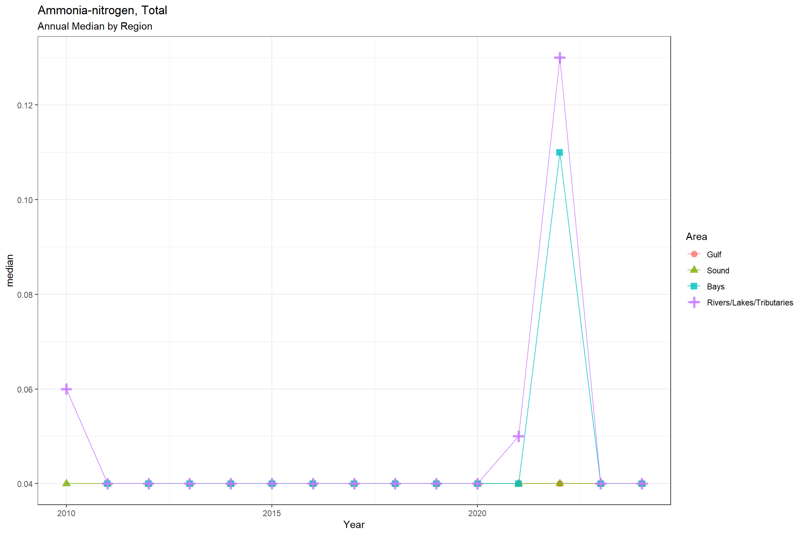
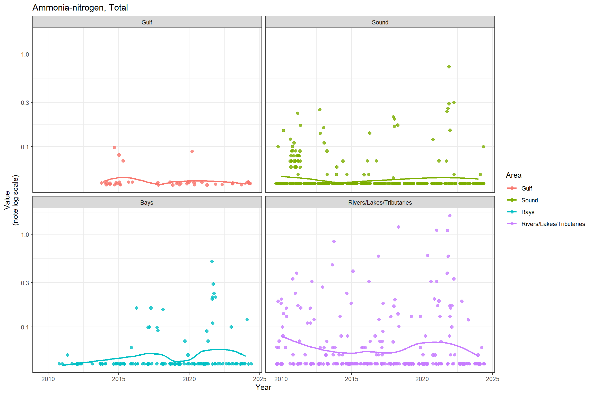
| Year | N | Mean | Median | SD | IQR | Min | Max |
|---|---|---|---|---|---|---|---|
| 2010 | 59 | 0.059 | 0.04 | 0.042 | 0.000 | 0.04 | 0.20 |
| 2011 | 81 | 0.070 | 0.04 | 0.060 | 0.030 | 0.04 | 0.38 |
| 2012 | 85 | 0.047 | 0.04 | 0.034 | 0.000 | 0.04 | 0.31 |
| 2013 | 86 | 0.050 | 0.04 | 0.038 | 0.000 | 0.04 | 0.27 |
| 2014 | 80 | 0.059 | 0.04 | 0.101 | 0.000 | 0.04 | 0.84 |
| 2015 | 88 | 0.050 | 0.04 | 0.046 | 0.000 | 0.04 | 0.40 |
| 2016 | 54 | 0.052 | 0.04 | 0.042 | 0.000 | 0.04 | 0.31 |
| 2017 | 58 | 0.061 | 0.04 | 0.075 | 0.008 | 0.04 | 0.58 |
| 2018 | 57 | 0.084 | 0.04 | 0.158 | 0.006 | 0.04 | 1.20 |
| 2019 | 53 | 0.042 | 0.04 | 0.012 | 0.000 | 0.04 | 0.13 |
| 2020 | 58 | 0.054 | 0.04 | 0.073 | 0.000 | 0.04 | 0.59 |
| 2021 | 55 | 0.083 | 0.04 | 0.154 | 0.005 | 0.04 | 1.11 |
| 2022 | 55 | 0.179 | 0.05 | 0.277 | 0.170 | 0.04 | 1.59 |
| 2023 | 52 | 0.046 | 0.04 | 0.025 | 0.000 | 0.04 | 0.19 |
| 2024 | 56 | 0.043 | 0.04 | 0.013 | 0.000 | 0.04 | 0.12 |
There are two graphs in this tab
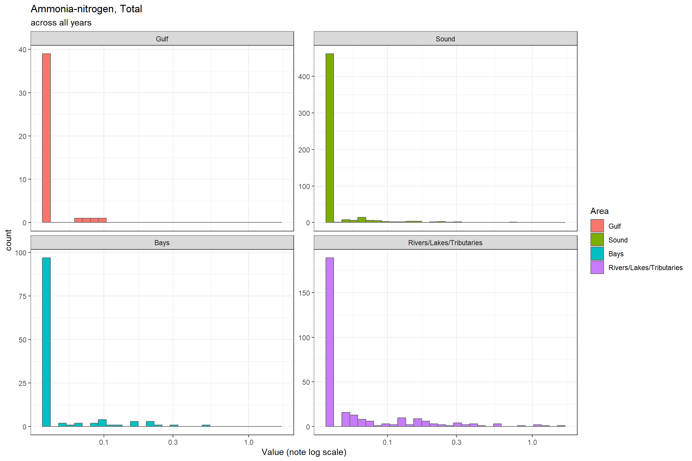
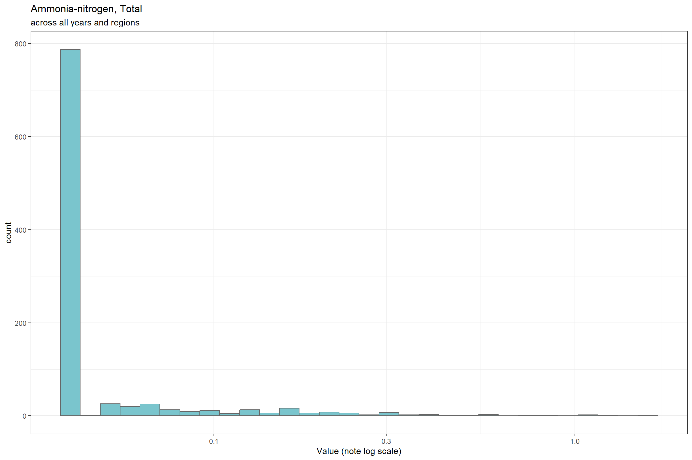
Chemical oxygen demand
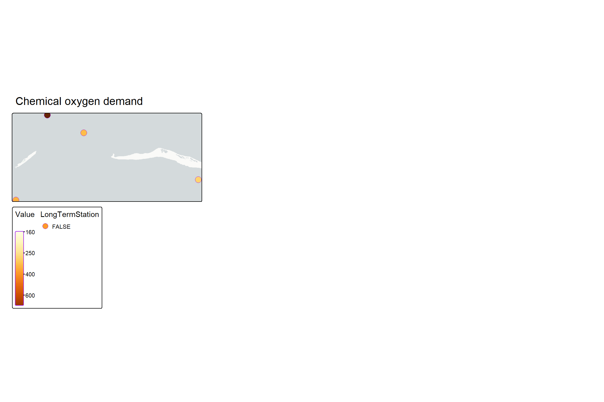
There are two graphs in this tab
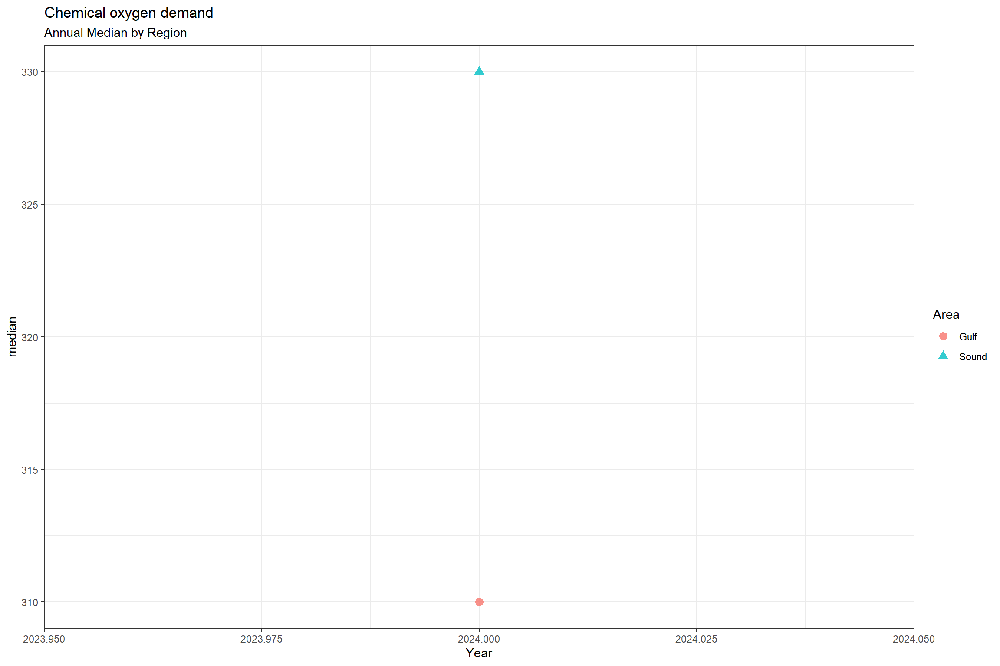
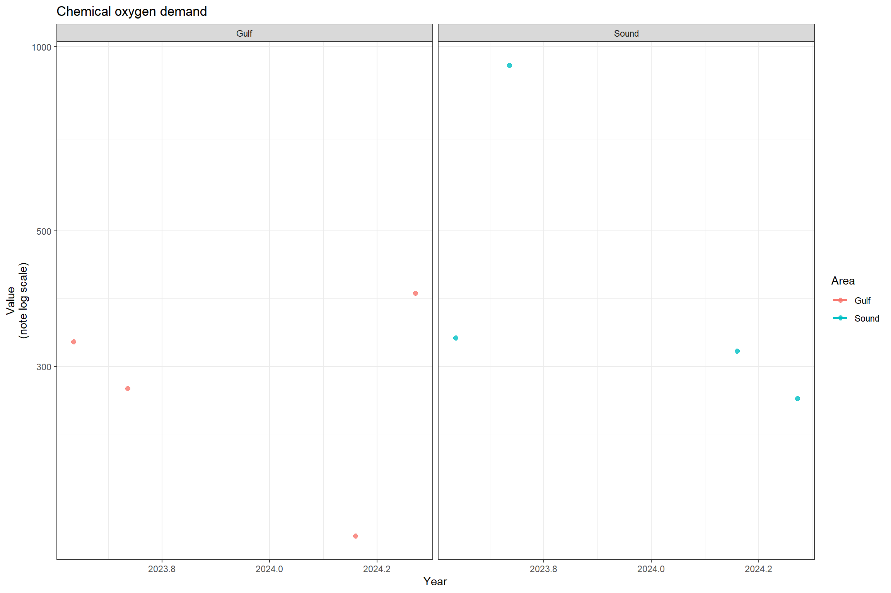
| Year | N | Mean | Median | SD | IQR | Min | Max |
|---|---|---|---|---|---|---|---|
| 2024 | 8 | 377.5 | 330 | 236.99 | 75 | 160 | 940 |
There are two graphs in this tab
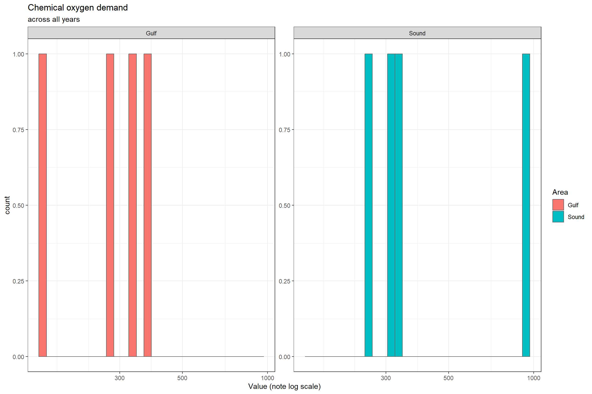
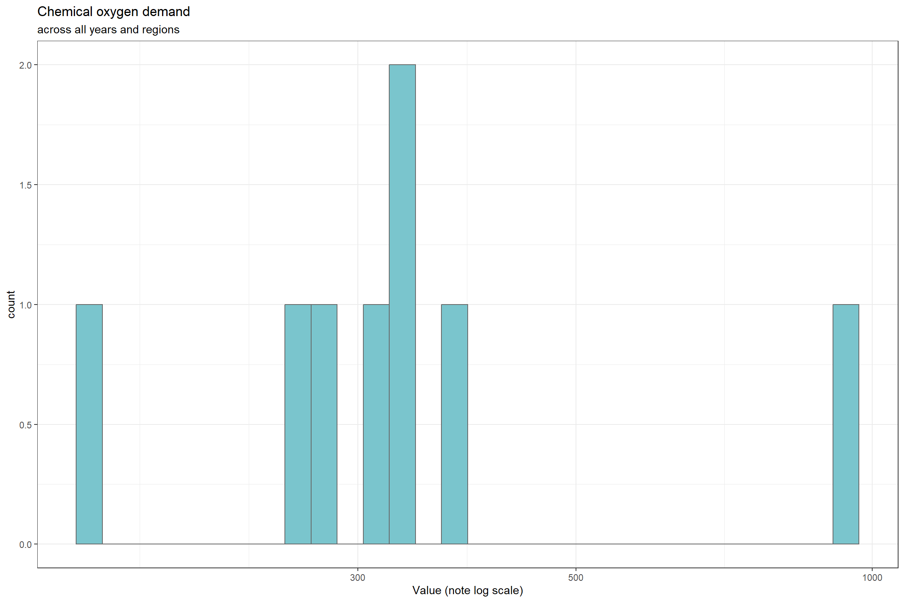
Chlorophyll a, uncorrected for pheophytin
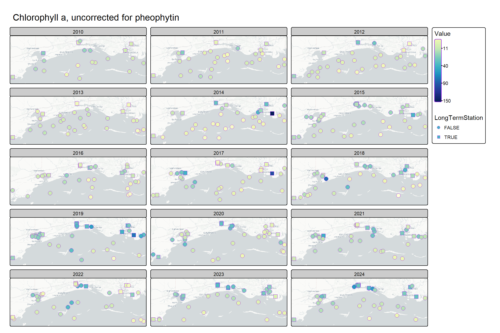
There are two graphs in this tab
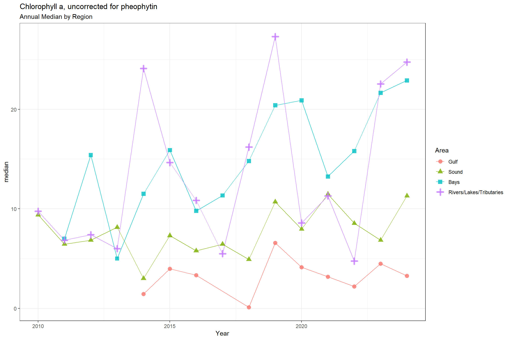
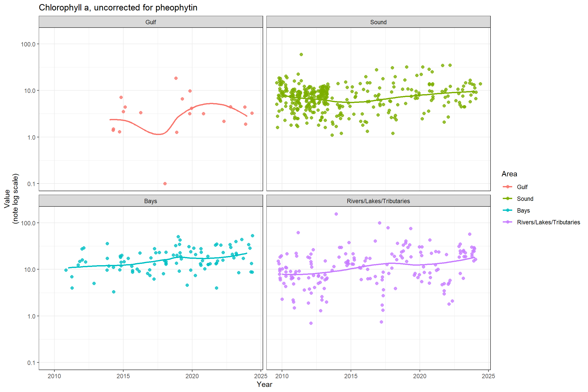
| Year | N | Mean | Median | SD | IQR | Min | Max |
|---|---|---|---|---|---|---|---|
| 2010 | 59 | 10.098 | 9.40 | 4.982 | 6.700 | 1.60 | 21.8 |
| 2011 | 81 | 8.401 | 6.60 | 9.302 | 4.900 | 1.50 | 61.5 |
| 2012 | 85 | 8.429 | 7.40 | 5.432 | 5.900 | 0.70 | 29.0 |
| 2013 | 86 | 7.427 | 7.40 | 3.178 | 4.575 | 1.30 | 15.2 |
| 2014 | 32 | 12.966 | 4.50 | 27.331 | 8.875 | 1.10 | 154.3 |
| 2015 | 38 | 12.453 | 12.95 | 6.884 | 8.030 | 1.30 | 37.6 |
| 2016 | 31 | 9.512 | 9.62 | 5.628 | 7.275 | 1.33 | 22.5 |
| 2017 | 33 | 12.500 | 7.03 | 17.979 | 6.380 | 0.75 | 99.8 |
| 2018 | 32 | 13.745 | 11.30 | 14.735 | 13.045 | 0.10 | 78.4 |
| 2019 | 33 | 23.342 | 19.50 | 15.004 | 18.700 | 1.27 | 75.1 |
| 2020 | 32 | 13.487 | 8.72 | 9.611 | 14.523 | 2.48 | 31.8 |
| 2021 | 33 | 14.537 | 12.70 | 8.625 | 9.710 | 3.17 | 42.9 |
| 2022 | 32 | 12.085 | 7.35 | 11.057 | 10.895 | 1.80 | 35.1 |
| 2023 | 33 | 16.628 | 17.60 | 10.241 | 15.180 | 4.45 | 39.6 |
| 2024 | 32 | 18.941 | 14.80 | 13.659 | 16.607 | 1.89 | 57.1 |
There are two graphs in this tab
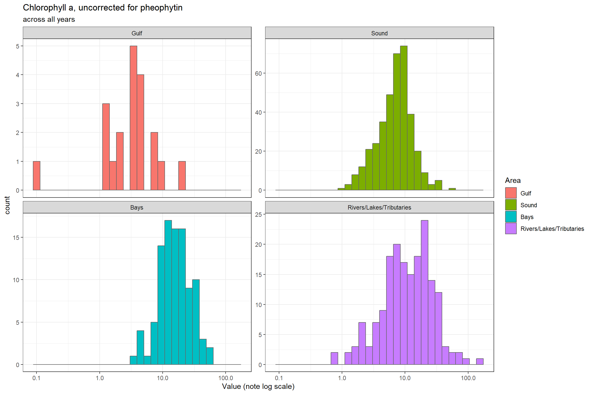
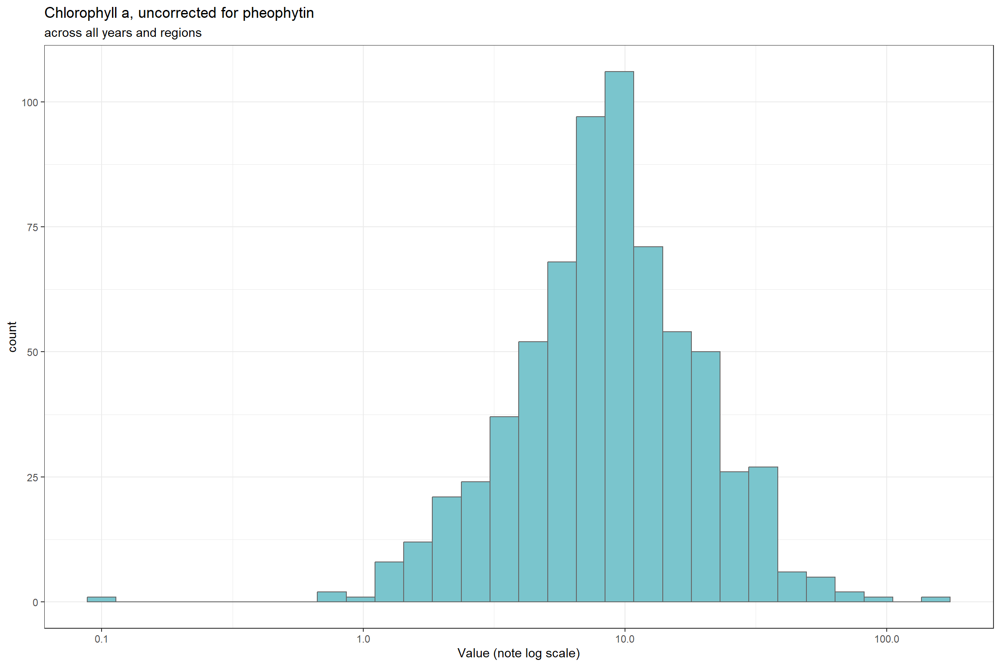
Depth, Secchi disk depth
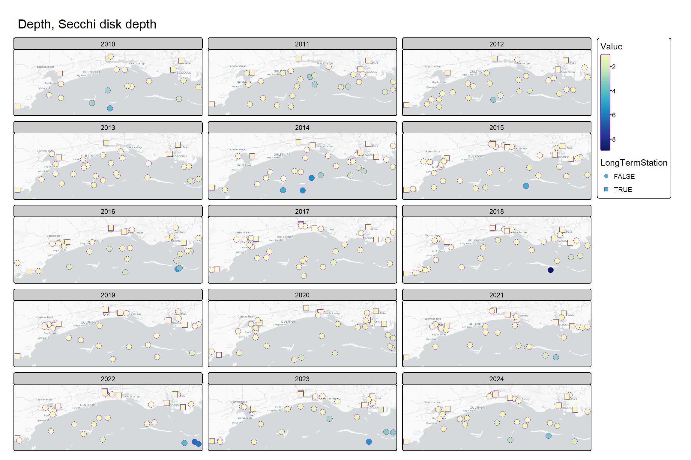
There are two graphs in this tab
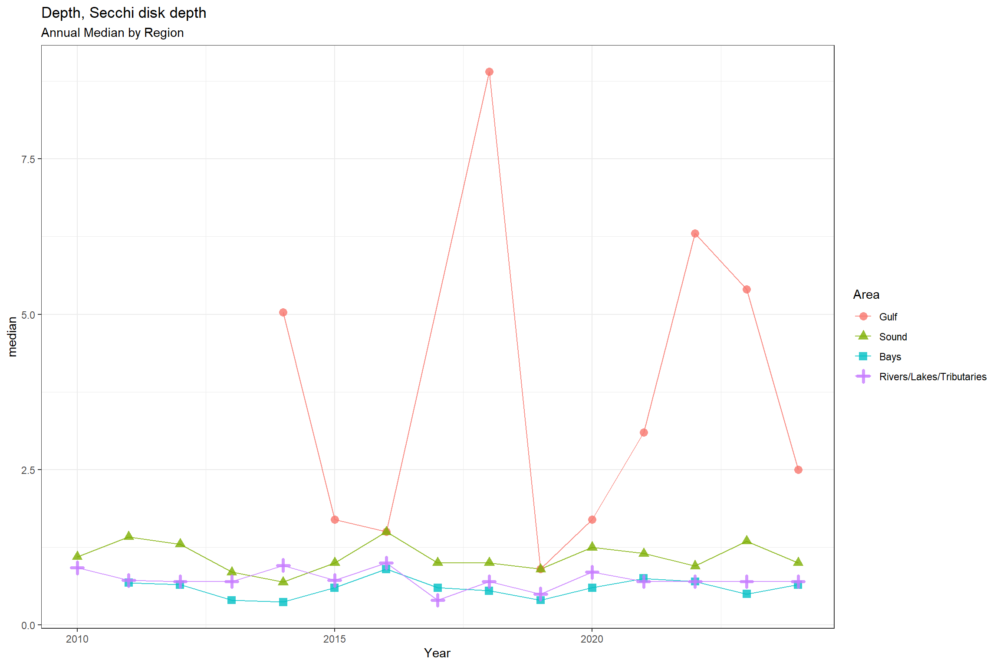
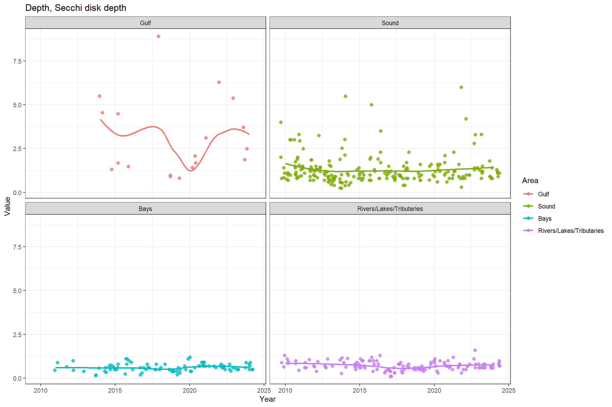
| Year | N | Mean | Median | SD | IQR | Min | Max |
|---|---|---|---|---|---|---|---|
| 2010 | 20 | 1.378 | 1.050 | 0.912 | 0.475 | 0.650 | 4.000 |
| 2011 | 30 | 1.367 | 1.125 | 0.746 | 0.638 | 0.450 | 3.300 |
| 2012 | 30 | 1.173 | 1.200 | 0.537 | 0.512 | 0.400 | 3.250 |
| 2013 | 30 | 0.867 | 0.800 | 0.331 | 0.337 | 0.400 | 1.800 |
| 2014 | 32 | 1.265 | 0.625 | 1.451 | 0.716 | 0.152 | 5.486 |
| 2015 | 37 | 0.941 | 0.800 | 0.661 | 0.350 | 0.500 | 4.500 |
| 2016 | 32 | 1.280 | 1.000 | 0.931 | 0.550 | 0.250 | 5.000 |
| 2017 | 33 | 0.658 | 0.600 | 0.347 | 0.500 | 0.100 | 1.500 |
| 2018 | 33 | 1.118 | 0.800 | 1.460 | 0.400 | 0.300 | 8.900 |
| 2019 | 33 | 0.621 | 0.500 | 0.276 | 0.200 | 0.200 | 1.600 |
| 2020 | 32 | 1.016 | 1.000 | 0.451 | 0.650 | 0.300 | 2.100 |
| 2021 | 33 | 1.024 | 0.900 | 0.546 | 0.400 | 0.500 | 3.100 |
| 2022 | 32 | 1.184 | 0.750 | 1.458 | 0.300 | 0.300 | 6.300 |
| 2023 | 33 | 1.209 | 0.800 | 1.058 | 0.700 | 0.400 | 5.400 |
| 2024 | 33 | 1.030 | 0.900 | 0.644 | 0.400 | 0.500 | 3.700 |
There are two graphs in this tab
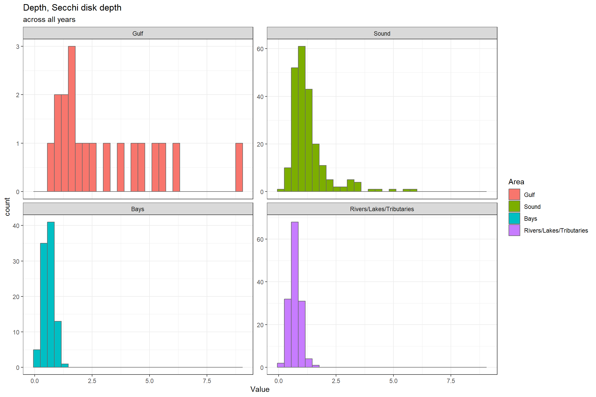
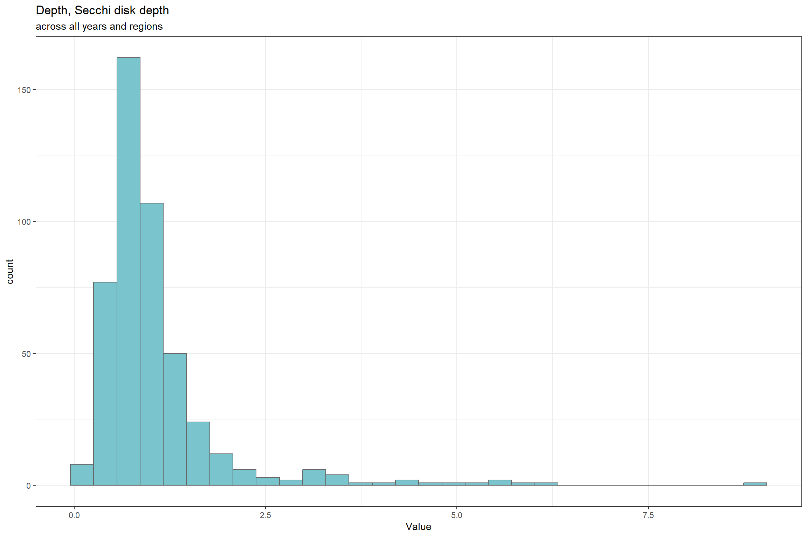
Depth, bottom
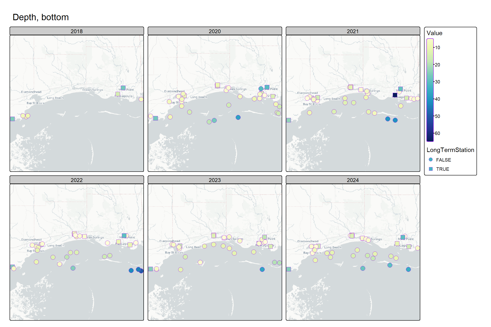
There are two graphs in this tab
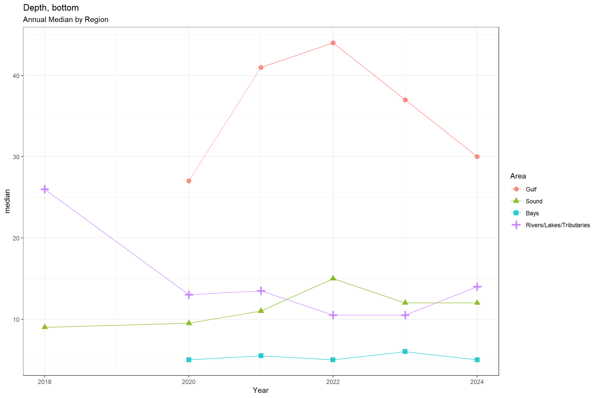
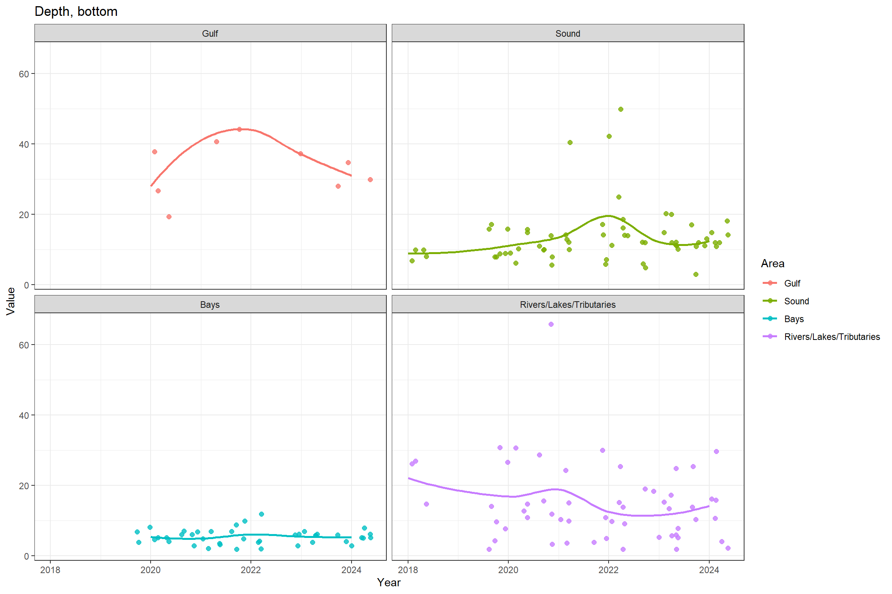
| Year | N | Mean | Median | SD | IQR | Min | Max |
|---|---|---|---|---|---|---|---|
| 2018 | 7 | 14.714 | 10.0 | 8.440 | 11.500 | 7 | 27.0 |
| 2020 | 33 | 12.909 | 10.0 | 8.960 | 9.000 | 2 | 38.0 |
| 2021 | 32 | 13.341 | 10.0 | 13.523 | 8.125 | 2 | 65.4 |
| 2022 | 32 | 14.328 | 11.0 | 12.272 | 10.500 | 2 | 50.0 |
| 2023 | 33 | 11.091 | 10.0 | 7.397 | 9.000 | 2 | 37.0 |
| 2024 | 32 | 12.875 | 11.5 | 8.654 | 10.250 | 2 | 35.0 |
There are two graphs in this tab
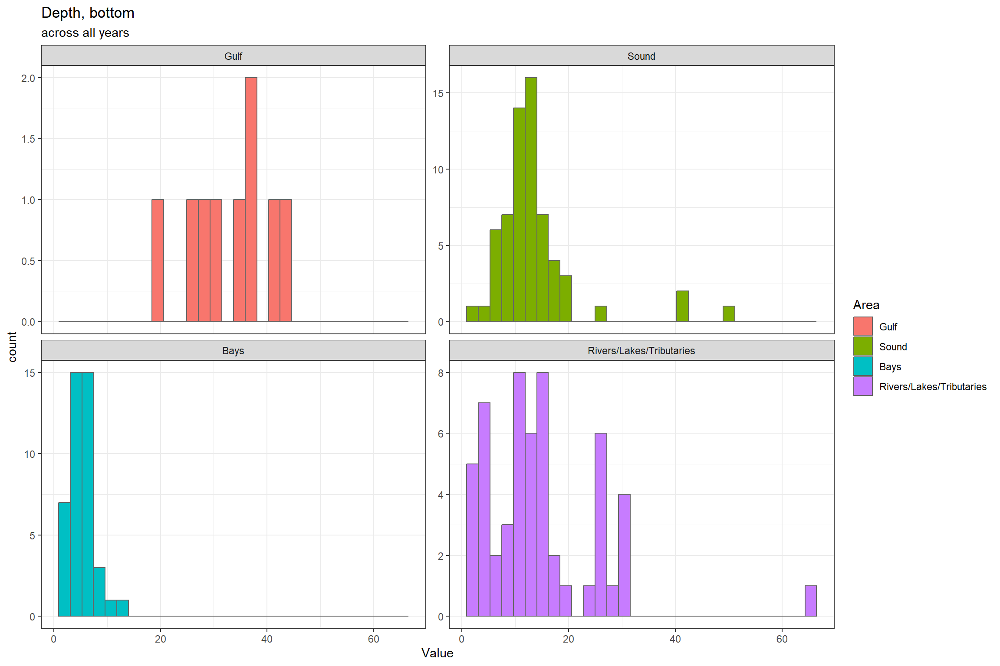
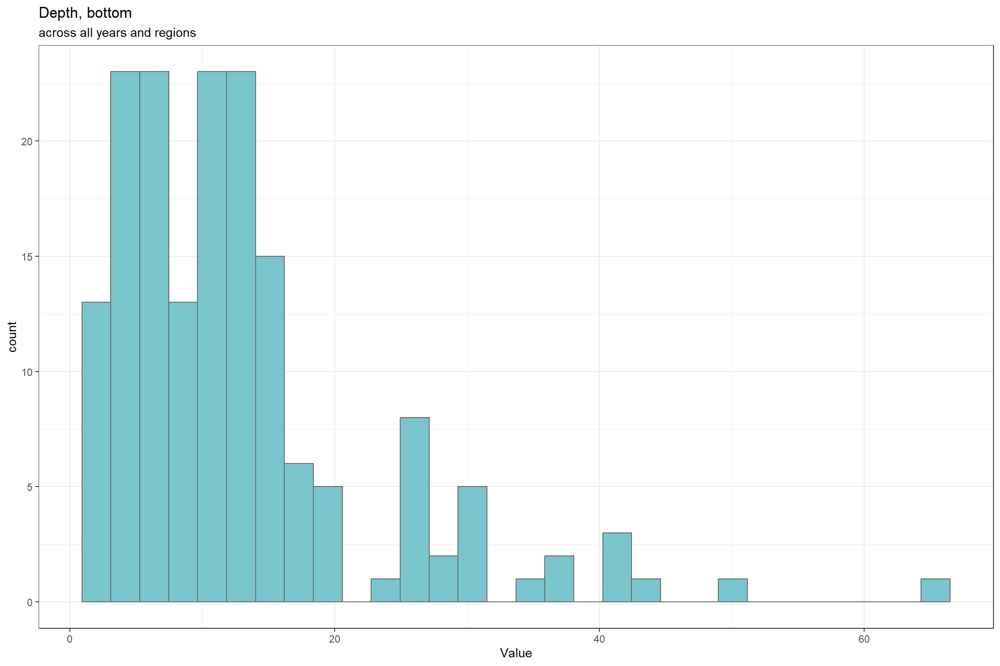
Dissolved oxygen (DO)
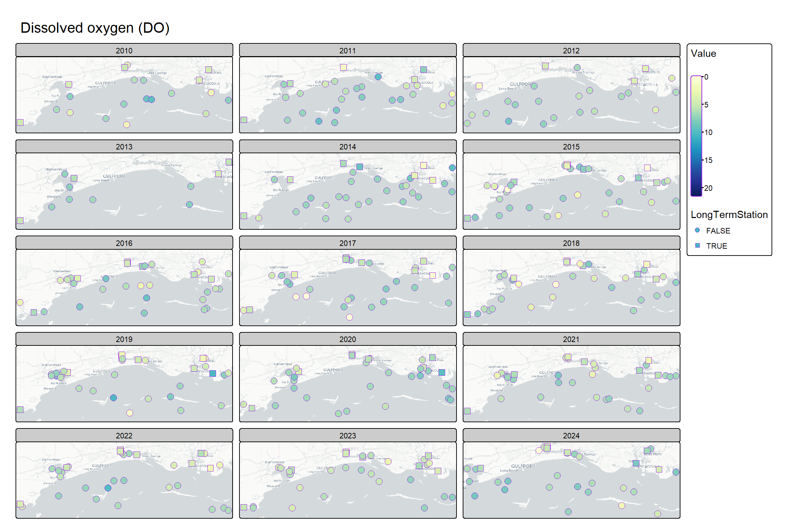
There are two graphs in this tab
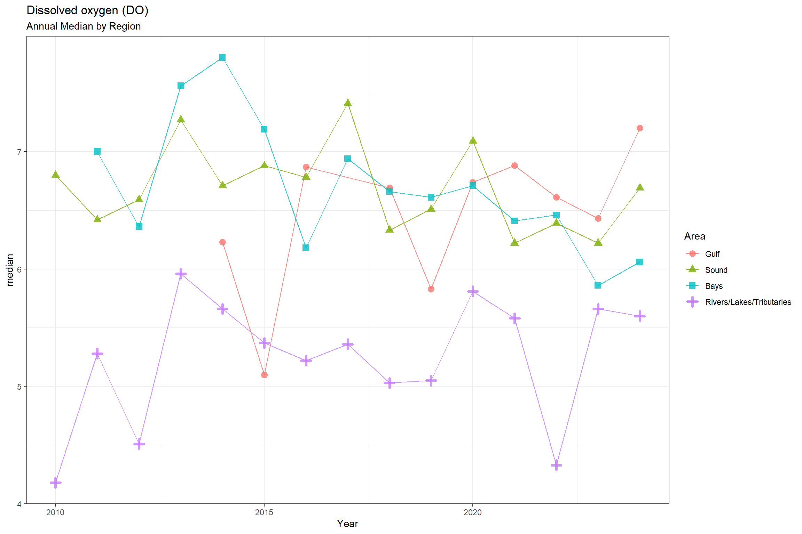
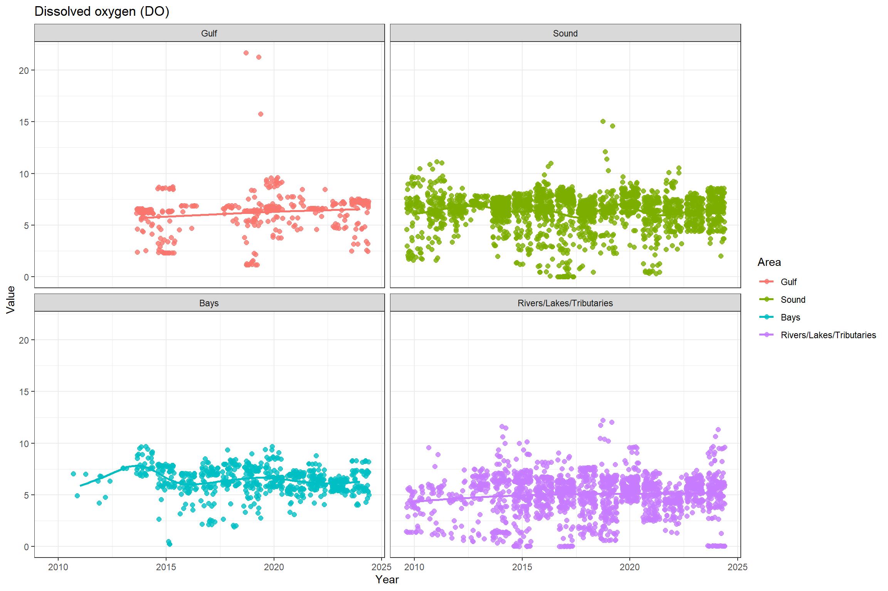
| Year | N | Mean | Median | SD | IQR | Min | Max |
|---|---|---|---|---|---|---|---|
| 2010 | 123 | 5.235 | 5.300 | 2.399 | 3.640 | 1.37 | 10.48 |
| 2011 | 146 | 6.152 | 6.190 | 2.051 | 2.133 | 1.14 | 11.12 |
| 2012 | 127 | 5.927 | 6.320 | 1.549 | 1.810 | 0.60 | 8.57 |
| 2013 | 116 | 6.231 | 6.785 | 1.657 | 1.420 | 0.49 | 7.84 |
| 2014 | 423 | 6.089 | 6.510 | 1.874 | 1.360 | 0.36 | 11.61 |
| 2015 | 414 | 5.596 | 6.300 | 2.219 | 2.900 | 0.03 | 10.13 |
| 2016 | 399 | 6.056 | 6.440 | 1.676 | 1.830 | 0.08 | 10.98 |
| 2017 | 442 | 5.578 | 6.175 | 2.359 | 3.010 | 0.00 | 9.07 |
| 2018 | 406 | 5.718 | 6.200 | 1.723 | 2.200 | 0.46 | 9.37 |
| 2019 | 382 | 5.596 | 6.015 | 2.569 | 2.728 | 0.59 | 21.67 |
| 2020 | 426 | 6.725 | 6.660 | 1.304 | 1.775 | 2.86 | 9.70 |
| 2021 | 393 | 5.517 | 5.710 | 1.666 | 2.040 | 0.32 | 8.46 |
| 2022 | 363 | 5.539 | 5.480 | 1.519 | 2.215 | 1.30 | 10.55 |
| 2023 | 407 | 5.917 | 5.860 | 0.940 | 1.200 | 2.94 | 8.11 |
| 2024 | 473 | 6.170 | 6.360 | 1.825 | 2.040 | 0.04 | 11.32 |
There are two graphs in this tab
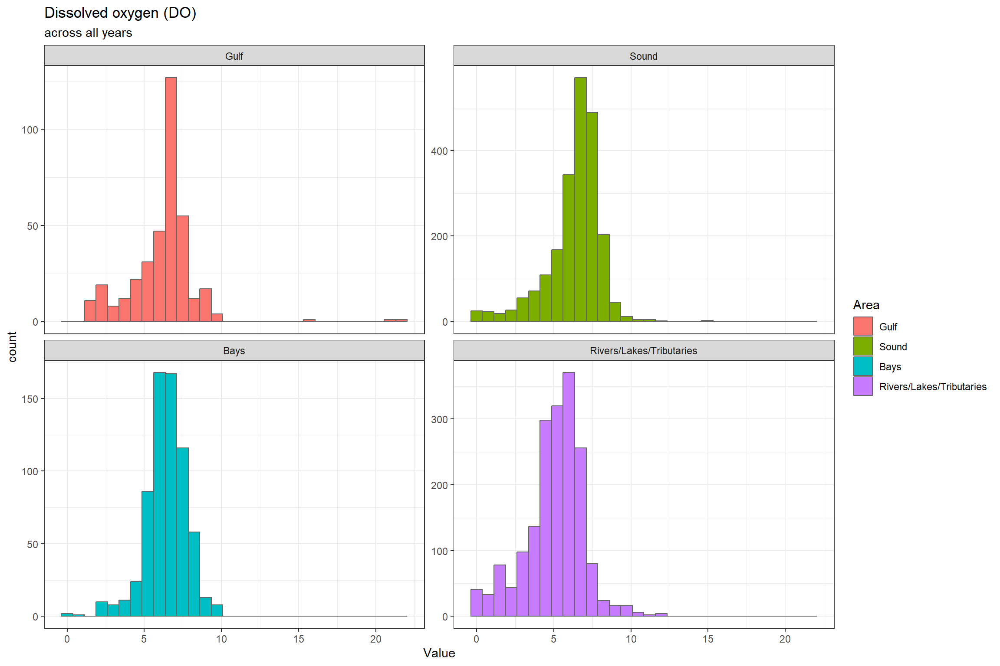
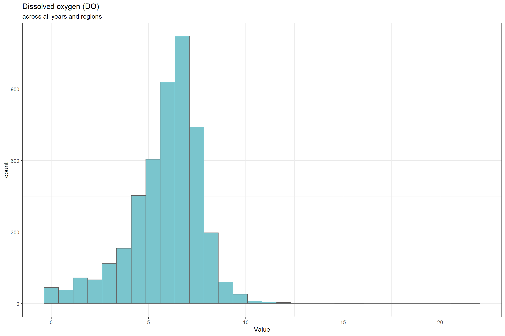
Dissolved oxygen saturation
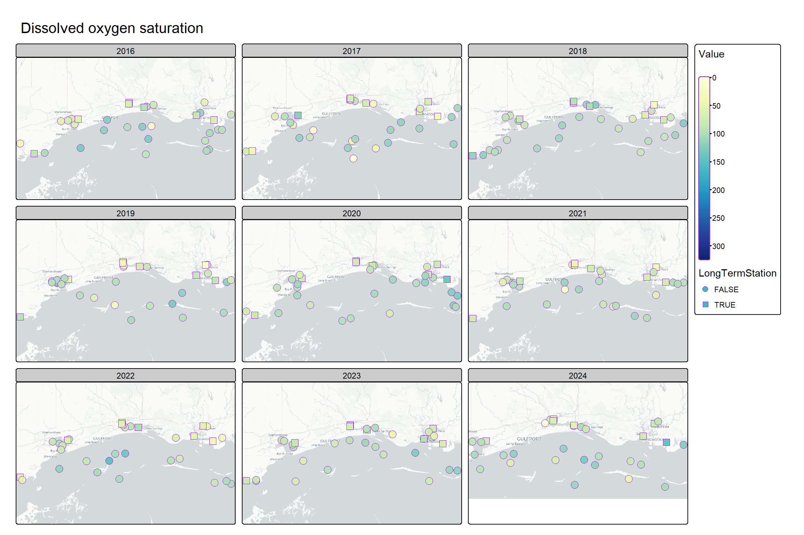
There are two graphs in this tab
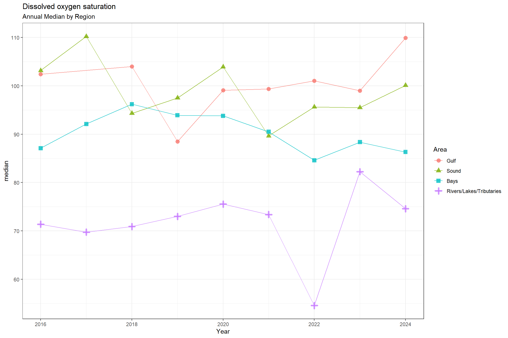
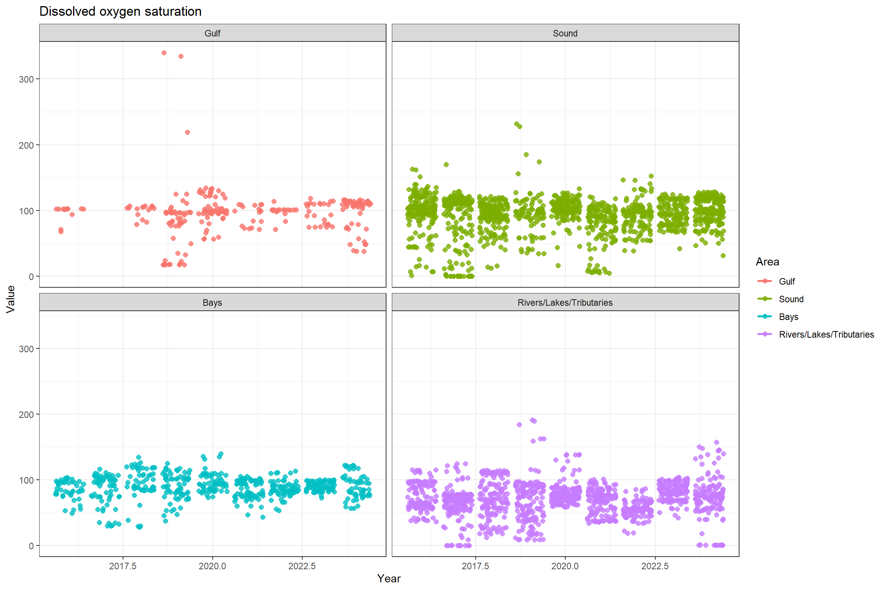
| Year | N | Mean | Median | SD | IQR | Min | Max |
|---|---|---|---|---|---|---|---|
| 2016 | 399 | 89.142 | 95.50 | 26.118 | 35.500 | 1.2 | 163.20 |
| 2017 | 442 | 77.825 | 76.90 | 34.845 | 48.675 | 0.0 | 170.10 |
| 2018 | 406 | 85.379 | 89.70 | 25.948 | 37.150 | 12.3 | 134.30 |
| 2019 | 382 | 81.998 | 87.60 | 39.099 | 40.075 | 9.0 | 339.80 |
| 2020 | 428 | 93.968 | 95.20 | 19.389 | 27.625 | 16.5 | 140.00 |
| 2021 | 393 | 77.114 | 80.60 | 23.937 | 27.700 | 4.8 | 121.00 |
| 2022 | 363 | 76.660 | 77.55 | 23.690 | 41.230 | 19.0 | 152.74 |
| 2023 | 407 | 89.708 | 88.30 | 15.260 | 19.450 | 42.0 | 125.20 |
| 2024 | 475 | 90.240 | 95.50 | 27.674 | 36.250 | 0.7 | 157.10 |
There are two graphs in this tab
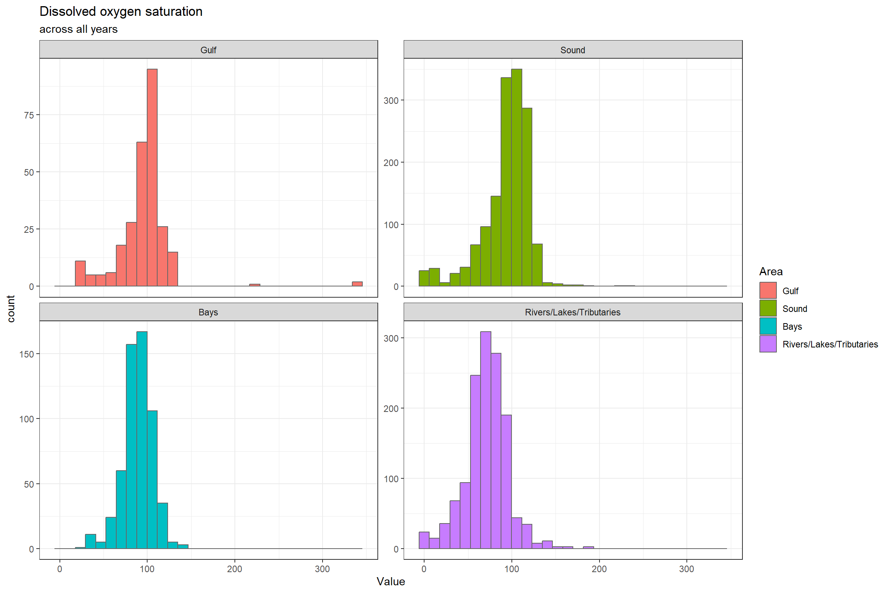
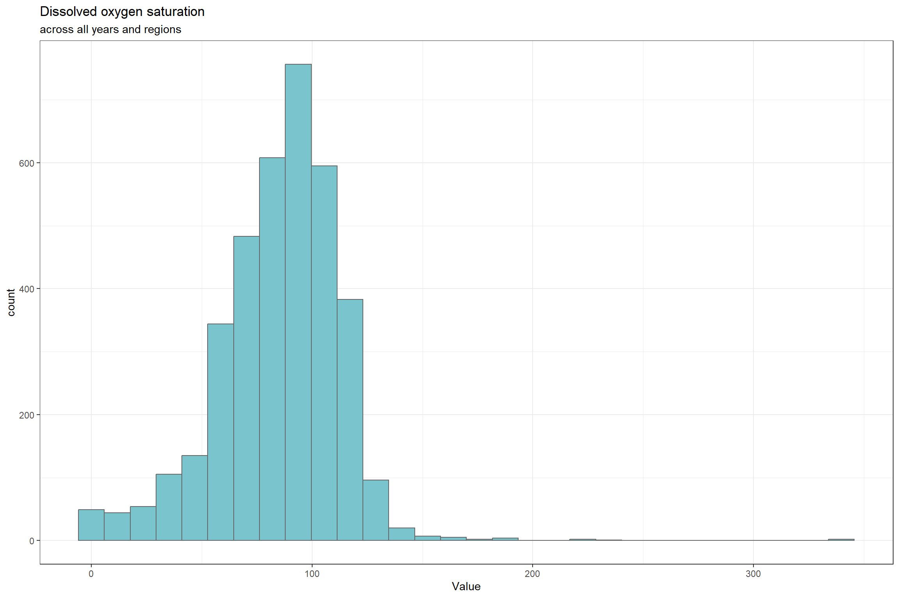
Kjeldahl nitrogen, Total
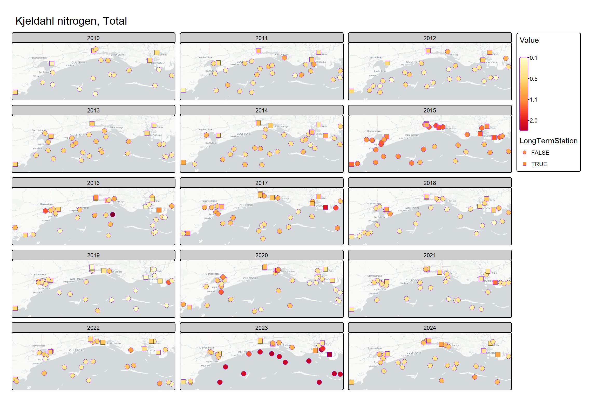
There are two graphs in this tab
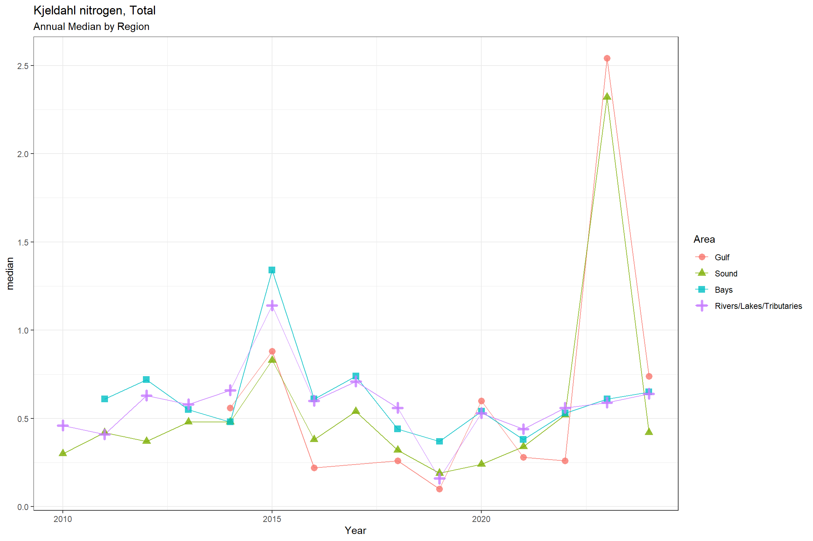
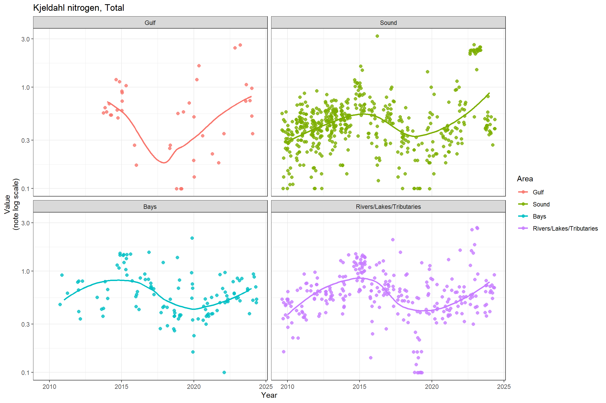
| Year | N | Mean | Median | SD | IQR | Min | Max |
|---|---|---|---|---|---|---|---|
| 2010 | 59 | 0.334 | 0.340 | 0.135 | 0.210 | 0.10 | 0.63 |
| 2011 | 81 | 0.452 | 0.420 | 0.170 | 0.190 | 0.17 | 0.94 |
| 2012 | 85 | 0.434 | 0.400 | 0.191 | 0.220 | 0.10 | 0.98 |
| 2013 | 86 | 0.503 | 0.510 | 0.126 | 0.175 | 0.22 | 0.85 |
| 2014 | 80 | 0.542 | 0.525 | 0.219 | 0.202 | 0.14 | 1.45 |
| 2015 | 88 | 1.006 | 1.025 | 0.293 | 0.410 | 0.33 | 1.62 |
| 2016 | 54 | 0.580 | 0.530 | 0.459 | 0.315 | 0.12 | 3.20 |
| 2017 | 58 | 0.687 | 0.660 | 0.294 | 0.223 | 0.27 | 2.06 |
| 2018 | 57 | 0.439 | 0.380 | 0.251 | 0.220 | 0.10 | 1.54 |
| 2019 | 53 | 0.305 | 0.240 | 0.261 | 0.270 | 0.10 | 1.37 |
| 2020 | 58 | 0.546 | 0.435 | 0.394 | 0.475 | 0.10 | 2.12 |
| 2021 | 55 | 0.416 | 0.380 | 0.178 | 0.110 | 0.18 | 1.30 |
| 2022 | 55 | 0.564 | 0.520 | 0.255 | 0.245 | 0.10 | 1.61 |
| 2023 | 52 | 1.545 | 1.715 | 0.867 | 1.743 | 0.30 | 2.71 |
| 2024 | 56 | 0.559 | 0.515 | 0.187 | 0.292 | 0.27 | 1.06 |
There are two graphs in this tab
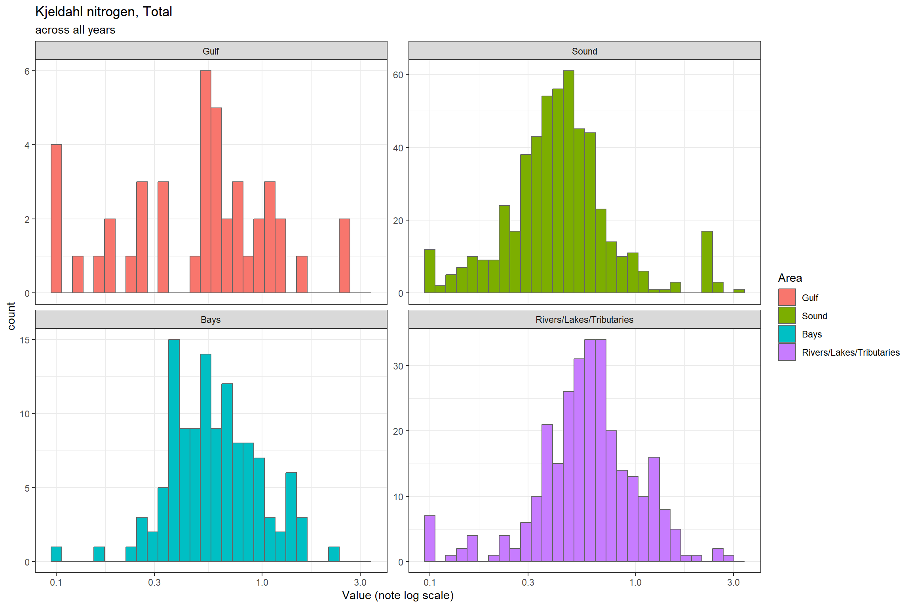
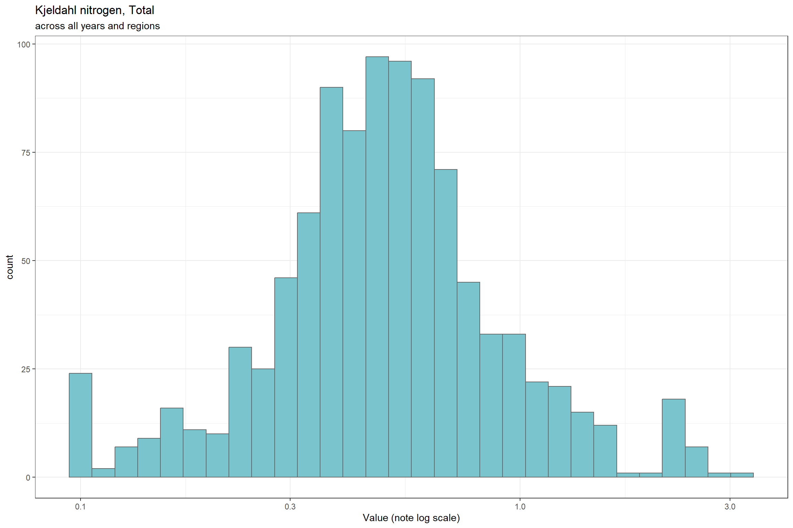
Nitrate + Nitrite, Total
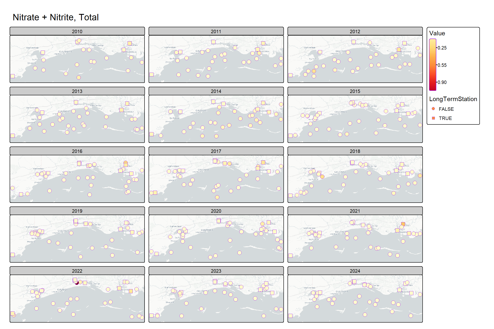
There are two graphs in this tab
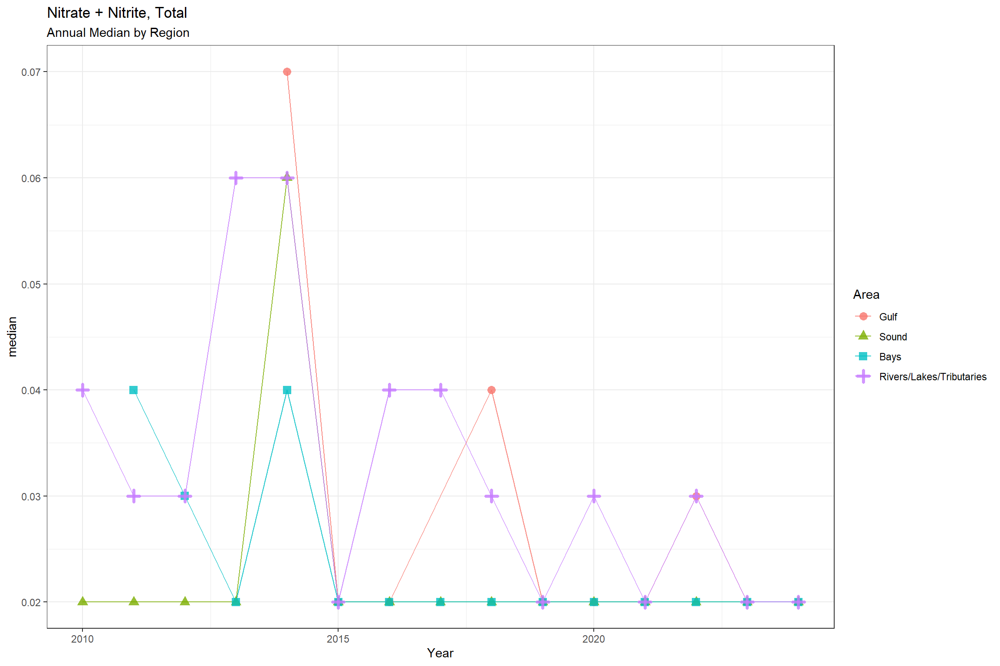
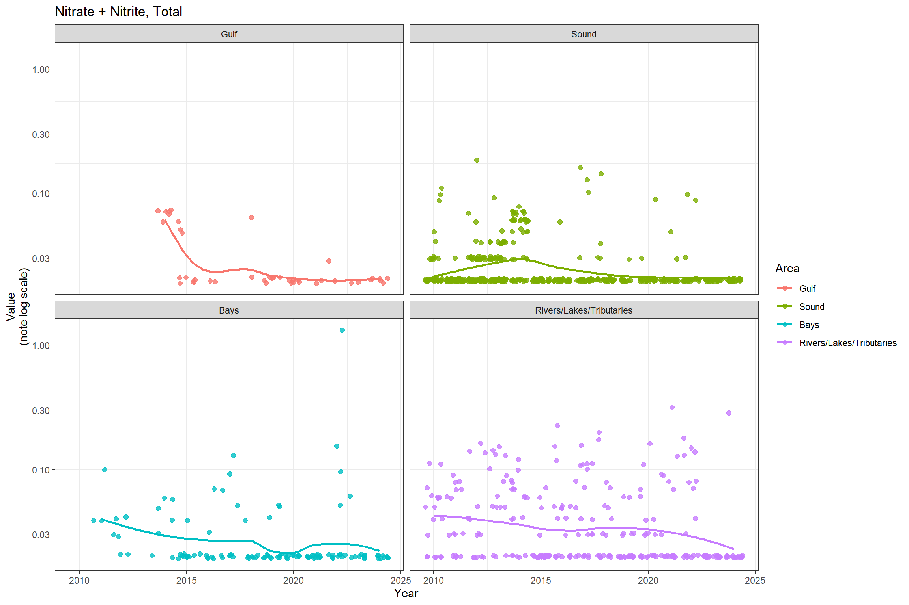
| Year | N | Mean | Median | SD | IQR | Min | Max |
|---|---|---|---|---|---|---|---|
| 2010 | 59 | 0.035 | 0.02 | 0.025 | 0.020 | 0.02 | 0.11 |
| 2011 | 81 | 0.027 | 0.02 | 0.017 | 0.000 | 0.02 | 0.10 |
| 2012 | 85 | 0.032 | 0.02 | 0.029 | 0.010 | 0.02 | 0.18 |
| 2013 | 86 | 0.035 | 0.02 | 0.028 | 0.020 | 0.02 | 0.15 |
| 2014 | 80 | 0.050 | 0.06 | 0.022 | 0.043 | 0.02 | 0.12 |
| 2015 | 88 | 0.023 | 0.02 | 0.010 | 0.000 | 0.02 | 0.07 |
| 2016 | 54 | 0.034 | 0.02 | 0.036 | 0.007 | 0.02 | 0.23 |
| 2017 | 58 | 0.044 | 0.02 | 0.040 | 0.030 | 0.02 | 0.16 |
| 2018 | 57 | 0.033 | 0.02 | 0.035 | 0.010 | 0.02 | 0.20 |
| 2019 | 53 | 0.024 | 0.02 | 0.010 | 0.000 | 0.02 | 0.06 |
| 2020 | 58 | 0.028 | 0.02 | 0.024 | 0.000 | 0.02 | 0.16 |
| 2021 | 55 | 0.033 | 0.02 | 0.045 | 0.000 | 0.02 | 0.32 |
| 2022 | 55 | 0.065 | 0.02 | 0.184 | 0.015 | 0.02 | 1.37 |
| 2023 | 52 | 0.021 | 0.02 | 0.006 | 0.000 | 0.02 | 0.06 |
| 2024 | 56 | 0.025 | 0.02 | 0.036 | 0.000 | 0.02 | 0.29 |
There are two graphs in this tab
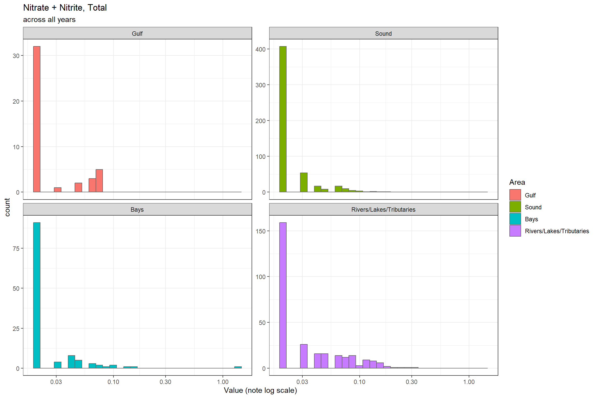
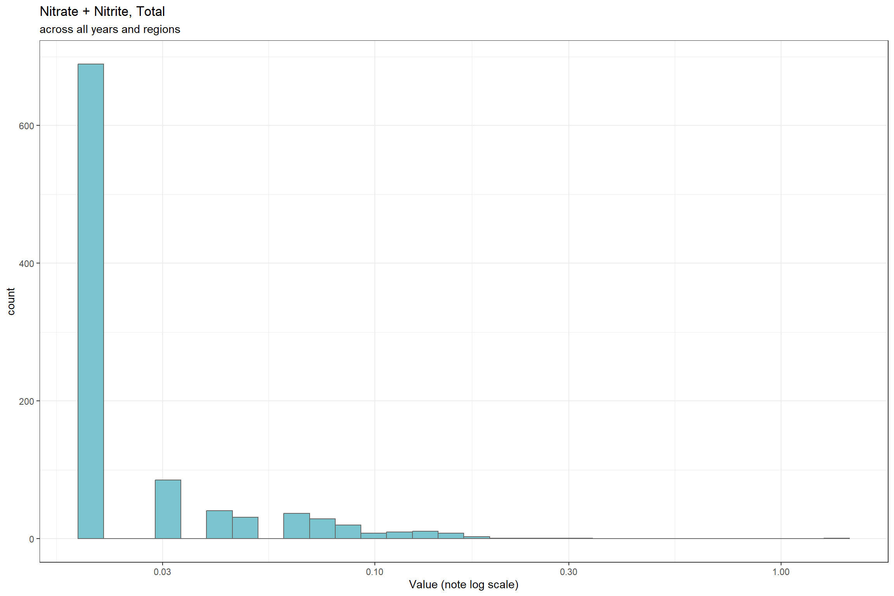
Nitrate, Dissolved
There are two graphs in this tab
| Year | N | Mean | Median | SD | IQR | Min | Max |
|---|---|---|---|---|---|---|---|
| 2010 | 59 | 0.022 | 0.010 | 0.024 | 0.024 | 0.005 | 0.115 |
| 2011 | 1 | 0.180 | 0.180 | NA | 0.000 | 0.180 | 0.180 |
| 2012 | 84 | 0.014 | 0.005 | 0.028 | 0.005 | 0.005 | 0.177 |
| 2013 | 86 | 0.026 | 0.007 | 0.033 | 0.039 | 0.005 | 0.165 |
| 2014 | 80 | 0.013 | 0.006 | 0.014 | 0.007 | 0.005 | 0.074 |
| 2015 | 88 | 0.102 | 0.100 | 0.019 | 0.019 | 0.055 | 0.155 |
| 2016 | 54 | 0.018 | 0.008 | 0.031 | 0.016 | 0.005 | 0.222 |
| 2017 | 58 | 0.024 | 0.005 | 0.028 | 0.031 | 0.005 | 0.100 |
| 2018 | 57 | 0.010 | 0.005 | 0.014 | 0.001 | 0.005 | 0.082 |
| 2019 | 53 | 0.006 | 0.005 | 0.004 | 0.000 | 0.005 | 0.032 |
| 2020 | 58 | 0.008 | 0.005 | 0.011 | 0.000 | 0.005 | 0.067 |
| 2021 | 55 | 0.020 | 0.014 | 0.024 | 0.019 | 0.002 | 0.130 |
| 2022 | 54 | 0.038 | 0.021 | 0.042 | 0.049 | 0.005 | 0.193 |
| 2023 | 52 | 0.009 | 0.005 | 0.006 | 0.008 | 0.005 | 0.030 |
| 2024 | 56 | 0.016 | 0.007 | 0.038 | 0.009 | 0.002 | 0.288 |
There are two graphs in this tab
Nitrite, Dissolved
There are two graphs in this tab
| Year | N | Mean | Median | SD | IQR | Min | Max |
|---|---|---|---|---|---|---|---|
| 2010 | 59 | 0.013 | 0.010 | 0.015 | 0.000 | 0.005 | 0.110 |
| 2011 | 81 | 0.014 | 0.017 | 0.009 | 0.015 | 0.005 | 0.064 |
| 2012 | 84 | 0.009 | 0.005 | 0.010 | 0.003 | 0.005 | 0.051 |
| 2013 | 86 | 0.007 | 0.005 | 0.005 | 0.000 | 0.005 | 0.039 |
| 2014 | 80 | 0.006 | 0.005 | 0.002 | 0.000 | 0.005 | 0.014 |
| 2015 | 88 | 0.006 | 0.005 | 0.004 | 0.000 | 0.005 | 0.027 |
| 2016 | 54 | 0.008 | 0.005 | 0.016 | 0.000 | 0.005 | 0.121 |
| 2017 | 58 | 0.012 | 0.005 | 0.023 | 0.003 | 0.005 | 0.139 |
| 2018 | 57 | 0.006 | 0.005 | 0.002 | 0.001 | 0.005 | 0.010 |
| 2019 | 53 | 0.013 | 0.013 | 0.008 | 0.010 | 0.005 | 0.047 |
| 2020 | 58 | 0.025 | 0.026 | 0.015 | 0.025 | 0.005 | 0.059 |
| 2021 | 55 | 0.008 | 0.006 | 0.007 | 0.002 | 0.005 | 0.053 |
| 2022 | 55 | 0.033 | 0.022 | 0.053 | 0.028 | 0.005 | 0.299 |
| 2023 | 52 | 0.008 | 0.005 | 0.006 | 0.000 | 0.005 | 0.046 |
| 2024 | 56 | 0.007 | 0.005 | 0.010 | 0.000 | 0.005 | 0.081 |
There are two graphs in this tab
Orthophosphate, Dissolved
There are two graphs in this tab
| Year | N | Mean | Median | SD | IQR | Min | Max |
|---|---|---|---|---|---|---|---|
| 2010 | 59 | 0.035 | 0.032 | 0.019 | 0.030 | 0.003 | 0.094 |
| 2011 | 81 | 0.014 | 0.010 | 0.013 | 0.018 | 0.002 | 0.049 |
| 2012 | 84 | 0.032 | 0.028 | 0.019 | 0.029 | 0.002 | 0.074 |
| 2013 | 86 | 0.025 | 0.023 | 0.015 | 0.019 | 0.002 | 0.078 |
| 2014 | 80 | 0.083 | 0.027 | 0.341 | 0.017 | 0.009 | 2.950 |
| 2015 | 88 | 0.129 | 0.055 | 0.432 | 0.057 | 0.003 | 3.270 |
| 2016 | 54 | 0.090 | 0.019 | 0.417 | 0.012 | 0.002 | 2.970 |
| 2017 | 58 | 0.220 | 0.011 | 1.198 | 0.017 | 0.002 | 8.610 |
| 2018 | 57 | 0.067 | 0.014 | 0.333 | 0.011 | 0.002 | 2.500 |
| 2019 | 53 | 0.071 | 0.024 | 0.234 | 0.018 | 0.002 | 1.270 |
| 2020 | 58 | 0.010 | 0.002 | 0.012 | 0.013 | 0.002 | 0.043 |
| 2021 | 54 | 0.168 | 0.006 | 1.142 | 0.013 | 0.002 | 8.400 |
| 2022 | 55 | 0.220 | 0.020 | 1.261 | 0.034 | 0.002 | 9.330 |
| 2023 | 52 | 0.042 | 0.026 | 0.060 | 0.027 | 0.001 | 0.328 |
| 2024 | 56 | 0.076 | 0.016 | 0.242 | 0.036 | 0.002 | 1.700 |
There are two graphs in this tab
Phosphorus, Total
There are two graphs in this tab
| Year | N | Mean | Median | SD | IQR | Min | Max |
|---|---|---|---|---|---|---|---|
| 2010 | 59 | 0.081 | 0.080 | 0.023 | 0.035 | 0.03 | 0.13 |
| 2011 | 81 | 0.050 | 0.040 | 0.033 | 0.060 | 0.02 | 0.14 |
| 2012 | 85 | 0.073 | 0.070 | 0.022 | 0.020 | 0.03 | 0.14 |
| 2013 | 86 | 0.063 | 0.060 | 0.028 | 0.030 | 0.02 | 0.15 |
| 2014 | 80 | 0.128 | 0.070 | 0.366 | 0.042 | 0.02 | 3.18 |
| 2015 | 88 | 0.227 | 0.100 | 0.740 | 0.020 | 0.03 | 5.90 |
| 2016 | 54 | 0.158 | 0.080 | 0.339 | 0.030 | 0.03 | 2.38 |
| 2017 | 58 | 0.404 | 0.140 | 1.217 | 0.200 | 0.02 | 7.51 |
| 2018 | 57 | 0.184 | 0.100 | 0.401 | 0.060 | 0.04 | 2.93 |
| 2019 | 53 | 0.164 | 0.100 | 0.326 | 0.060 | 0.04 | 1.79 |
| 2020 | 57 | 0.067 | 0.050 | 0.093 | 0.050 | 0.02 | 0.72 |
| 2021 | 55 | 0.197 | 0.050 | 0.991 | 0.030 | 0.02 | 7.40 |
| 2022 | 55 | 0.161 | 0.050 | 0.636 | 0.050 | 0.02 | 4.69 |
| 2023 | 52 | 0.113 | 0.085 | 0.070 | 0.062 | 0.04 | 0.40 |
| 2024 | 56 | 0.137 | 0.070 | 0.235 | 0.073 | 0.02 | 1.55 |
There are two graphs in this tab
Salinity
There are two graphs in this tab
| Year | N | Mean | Median | SD | IQR | Min | Max |
|---|---|---|---|---|---|---|---|
| 2010 | 182 | 19.348 | 20.300 | 8.676 | 13.198 | 2.89 | 34.50 |
| 2011 | 146 | 19.950 | 21.950 | 7.209 | 10.125 | 0.73 | 29.41 |
| 2012 | 157 | 21.589 | 24.610 | 8.103 | 9.360 | 0.34 | 32.93 |
| 2013 | 114 | 12.455 | 16.305 | 8.647 | 17.352 | 0.41 | 29.73 |
| 2014 | 423 | 24.039 | 27.820 | 9.363 | 13.860 | 2.40 | 35.38 |
| 2015 | 414 | 23.984 | 24.535 | 7.802 | 11.808 | 3.08 | 38.03 |
| 2016 | 399 | 19.981 | 24.820 | 10.088 | 15.595 | 1.43 | 32.10 |
| 2017 | 442 | 14.453 | 18.625 | 10.403 | 20.180 | 0.02 | 33.49 |
| 2018 | 406 | 21.228 | 22.310 | 8.177 | 13.083 | 0.38 | 35.53 |
| 2019 | 382 | 18.502 | 19.330 | 7.792 | 15.495 | 3.60 | 36.83 |
| 2020 | 428 | 18.361 | 20.490 | 8.983 | 15.660 | 0.93 | 36.44 |
| 2021 | 393 | 13.712 | 13.040 | 8.049 | 10.470 | 0.09 | 30.40 |
| 2022 | 363 | 11.841 | 8.410 | 11.537 | 20.120 | 0.03 | 32.94 |
| 2023 | 407 | 27.274 | 25.750 | 5.427 | 9.310 | 14.01 | 35.62 |
| 2024 | 480 | 21.043 | 22.905 | 9.333 | 15.595 | 2.34 | 34.99 |
There are two graphs in this tab
Specific conductance
There are two graphs in this tab
| Year | N | Mean | Median | SD | IQR | Min | Max |
|---|---|---|---|---|---|---|---|
| 2016 | 399 | 31423.63 | 38971.0 | 15174.657 | 22535.50 | 2694.00 | 59008 |
| 2017 | 442 | 23072.45 | 29851.5 | 16093.063 | 31067.00 | 61.00 | 50935 |
| 2018 | 406 | 33852.64 | 35580.5 | 12124.001 | 18946.75 | 765.00 | 57553 |
| 2019 | 380 | 29500.60 | 31077.0 | 11666.567 | 23178.25 | 1944.00 | 51803 |
| 2020 | 428 | 29279.54 | 32950.5 | 13576.488 | 23169.75 | 1844.00 | 55019 |
| 2021 | 393 | 22383.34 | 21860.0 | 12423.889 | 16005.00 | 191.00 | 46962 |
| 2022 | 363 | 18682.61 | 14202.0 | 17462.425 | 31279.50 | 70.84 | 49431 |
| 2023 | 407 | 42065.99 | 40232.0 | 8104.267 | 13231.50 | 37.39 | 53774 |
| 2024 | 479 | 33272.83 | 36526.0 | 13888.721 | 22879.00 | 4296.00 | 74310 |
There are two graphs in this tab
Temperature, water
There are two graphs in this tab
| Year | N | Mean | Median | SD | IQR | Min | Max |
|---|---|---|---|---|---|---|---|
| 2010 | 123 | 30.548 | 30.700 | 1.613 | 1.345 | 27.00 | 33.90 |
| 2011 | 146 | 27.043 | 27.055 | 0.640 | 0.723 | 24.90 | 28.85 |
| 2012 | 157 | 29.906 | 29.940 | 0.755 | 0.720 | 27.11 | 31.61 |
| 2013 | 364 | 28.601 | 28.645 | 1.168 | 2.020 | 25.30 | 30.93 |
| 2014 | 424 | 28.046 | 28.205 | 1.782 | 2.390 | 23.61 | 32.37 |
| 2015 | 414 | 30.561 | 30.870 | 1.527 | 0.938 | 25.03 | 33.54 |
| 2016 | 399 | 29.988 | 29.670 | 1.085 | 1.670 | 27.96 | 33.02 |
| 2017 | 442 | 28.924 | 29.325 | 1.424 | 1.258 | 25.06 | 31.89 |
| 2018 | 406 | 29.934 | 30.000 | 1.031 | 1.200 | 26.80 | 32.70 |
| 2019 | 382 | 30.000 | 30.000 | 0.841 | 1.300 | 27.90 | 32.20 |
| 2020 | 428 | 27.444 | 28.800 | 2.491 | 4.900 | 22.65 | 32.60 |
| 2021 | 393 | 29.403 | 29.700 | 1.123 | 1.700 | 25.60 | 31.90 |
| 2022 | 363 | 28.549 | 28.900 | 1.232 | 2.045 | 24.20 | 32.04 |
| 2023 | 407 | 29.631 | 29.500 | 1.126 | 1.670 | 27.29 | 32.25 |
| 2024 | 480 | 29.628 | 29.875 | 2.038 | 2.560 | 2.85 | 32.49 |
There are two graphs in this tab
Total suspended solids, Suspended
There are two graphs in this tab
| Year | N | Mean | Median | SD | IQR | Min | Max |
|---|---|---|---|---|---|---|---|
| 2010 | 53 | 24.868 | 24.0 | 12.396 | 18.00 | 6 | 62 |
| 2011 | 81 | 19.802 | 18.0 | 9.544 | 13.00 | 4 | 54 |
| 2012 | 85 | 23.388 | 20.0 | 11.026 | 10.00 | 7 | 74 |
| 2013 | 86 | 23.244 | 19.5 | 16.365 | 15.75 | 4 | 90 |
| 2014 | 80 | 25.212 | 20.0 | 16.270 | 11.50 | 6 | 110 |
| 2015 | 88 | 33.580 | 30.0 | 17.070 | 15.00 | 6 | 111 |
| 2016 | 54 | 31.170 | 31.0 | 19.139 | 24.00 | 4 | 92 |
| 2017 | 57 | 21.614 | 21.0 | 8.031 | 13.00 | 8 | 42 |
| 2018 | 57 | 22.105 | 18.0 | 12.599 | 12.00 | 6 | 63 |
| 2019 | 53 | 31.000 | 26.0 | 19.166 | 16.00 | 11 | 98 |
| 2020 | 57 | 14.561 | 13.0 | 16.099 | 7.00 | 4 | 124 |
| 2021 | 54 | 31.889 | 26.0 | 20.253 | 31.75 | 4 | 95 |
| 2022 | 55 | 20.200 | 18.0 | 13.429 | 16.00 | 4 | 60 |
| 2023 | 51 | 21.529 | 19.0 | 8.771 | 10.50 | 7 | 46 |
| 2024 | 56 | 40.696 | 24.5 | 74.459 | 19.00 | 4 | 480 |
There are two graphs in this tab
Turbidity
There are two graphs in this tab
| Year | N | Mean | Median | SD | IQR | Min | Max |
|---|---|---|---|---|---|---|---|
| 2017 | 58 | 11.793 | 8.00 | 9.307 | 11.000 | 3.00 | 42.0 |
| 2018 | 58 | 9.362 | 7.50 | 5.931 | 6.500 | 2.00 | 25.0 |
| 2019 | 52 | 9.154 | 8.00 | 4.465 | 5.000 | 1.00 | 22.0 |
| 2020 | 58 | 8.621 | 7.00 | 4.572 | 4.000 | 4.00 | 24.0 |
| 2021 | 53 | 7.265 | 7.25 | 3.873 | 4.750 | 0.80 | 20.9 |
| 2022 | 55 | 11.313 | 8.25 | 10.253 | 5.340 | 1.58 | 50.9 |
| 2023 | 53 | 9.239 | 8.33 | 4.316 | 5.460 | 3.40 | 20.1 |
| 2024 | 52 | 11.440 | 7.52 | 16.230 | 4.392 | 1.07 | 108.0 |
There are two graphs in this tab
pH
There are two graphs in this tab
| Year | N | Mean | Median | SD | IQR | Min | Max |
|---|---|---|---|---|---|---|---|
| 2010 | 123 | 7.756 | 7.870 | 0.549 | 0.670 | 6.58 | 8.49 |
| 2011 | 146 | 7.796 | 7.920 | 0.403 | 0.393 | 6.54 | 8.33 |
| 2012 | 157 | 7.814 | 8.050 | 0.554 | 0.250 | 5.76 | 8.22 |
| 2013 | 364 | 7.773 | 7.920 | 0.522 | 0.510 | 6.33 | 8.46 |
| 2014 | 424 | 7.709 | 7.850 | 0.331 | 0.410 | 6.62 | 8.05 |
| 2015 | 414 | 7.718 | 7.850 | 0.395 | 0.340 | 6.46 | 8.33 |
| 2016 | 399 | 7.361 | 7.540 | 0.562 | 0.545 | 5.88 | 8.08 |
| 2017 | 442 | 7.066 | 7.315 | 0.944 | 1.305 | 4.92 | 8.16 |
| 2018 | 406 | 7.635 | 7.810 | 0.422 | 0.458 | 5.86 | 8.15 |
| 2019 | 382 | 7.704 | 7.800 | 0.406 | 0.650 | 6.48 | 8.80 |
| 2020 | 427 | 7.659 | 7.910 | 0.501 | 0.715 | 6.51 | 8.27 |
| 2021 | 393 | 7.416 | 7.510 | 0.602 | 0.900 | 5.91 | 8.31 |
| 2022 | 363 | 7.070 | 7.200 | 0.896 | 1.820 | 5.19 | 8.62 |
| 2023 | 407 | 7.480 | 7.570 | 0.295 | 0.360 | 6.43 | 7.94 |
| 2024 | 479 | 7.515 | 7.750 | 0.517 | 0.710 | 6.13 | 8.21 |
There are two graphs in this tab